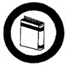

Bookbinding
- Name the different parts of a book
- Do the following:
- Name the different materials used in bookbinding.
- Name some substitute materials used in bookbinding.
- Describe the proper steps in preparing paste, and explain their uses.
- Name the tools and equipment used in bookbinding, and explain their uses.
- Describe at least four (4) different stitches used in bookbinding.
- Bind or rebind any of the following:
- Sheets of papers
- Volume of loose magazines or newspapers
- A damaged book
|